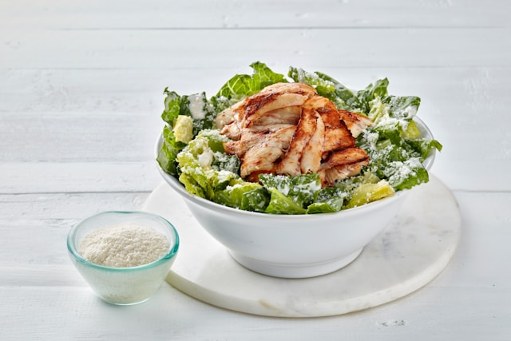

Chicken Salad
Home

Photo by
Orkun Orcan
on
Unsplash
Chicken salad is a simple and nutritious dish with the right portions of vegetables and protein.
The portions here are for a three-people dish.
Ingredients
- 500g of chicken breast.
- 2tbsp
- Six leaves of your favourite lettuce
- One red tomato
- One of the following: an apple, berries, a pear, or 100g walnuts
- Dressing: choose as many as you want.
- Honey mustard
- Ketchup & mayo
- Parmesan cheese
- Ranch dressing
- Vinaigrette
Preparation
-
On a pan, add one tablespoon of butter and heat is slowly.
Let it melt until the whole pan area is covered in butter.
-
Place the chicken breasts on the pan until they are well cooked.
-
While you wait, you can slice the lettuce, the tomatoes, and the fruits.
-
When the breasts are ready, cut them in strips.
-
On a bowl, place a bed of lettuce, followed by the tomato slices.
-
Next add the chicken breasts.
-
Finally, add the fruit and the dressing.